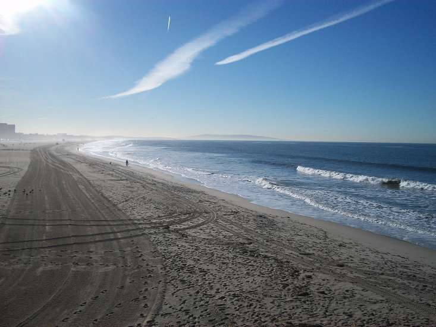

Programming for the Internet of Things Course
University of California, Irvine
Paul J Gitschner
Capstone projectWeek 1 :
Requirement specification document
Project Name: The Pineapple Drink Metal Detector
Tag line: ROOMBA - meets - METAL DETECTOR - meets - ALARM CLOCK
Behavior from a user’s perspective:
Picture a couple going on an expensive vacation to a sunny place known for its beaches.
One just wants to lay on a towel and tan, the other wants to explore for treasure with a brand new metal detector
bought for the trip. They want to spend time together.
This IOT device is the solution. An Autonomous metal detector
with safe mobility and communication capabilities.
User interface:
Our Operator goes to the beach and sets the device loose, defining its roam area limits, then tans on a beach towel
with a pineapple drink in his hand while his device explores the beach with a metal detector sensor set for
buried treasure.
It avoids the rocks, the kids and the ocean and if it finds something
stops there, flashes lights, sirens, logs the find, and sends a message to the
operators phone - every ten minutes, just in case he fell asleep.
It dials 911 after 20 minutes of no response to report operator down.
Designer Perspective: Behavior Specified to allow a design?
Specification:
A programmable and configuarable mobility platform that would MOVE across or above at near ground / water level surface
and autonomously explore an AREA specifically referenced and defined.
It would employ calibratable on board SENSORS that detect metal to evaluate that surface and detect according to specified criteria.
It would ALERT and either STOP to indicate the location or record coordinates for later operator attention
when encountering an anomaly as specified.
It will also PROTECT itself , obstacles encounters low resources, and others from its operation.
It would be of rugged construction to protect from sand, minor impact, falls, water imerssion.
It would be secure in having an operator security code, and a location callback in case of loss or theft.
It will be flexible, with interchangeable sensor types to have multiple usecase applications due to configuation, programming and selection
options.It would have the capability to evaluate anomolies and only alert if finding appears valuable, as defined by software.( no beercan, yes Rolex)
Alternative uses could be as varied as. Mine detector. Ground effects radar platform. Body in a lake finder.
Design Constraints:
Cost to Manufacture: As this is meant to be a consumer product it should be able to be sold by distributors
at about the same level as an similar Adult discretionary purchase.
Standard Parts: As it will probably need repair at some point, as many as possible easily purchasable standard parts should be incorporated in the design
Size : as this is meant to be taken to the beaches, it must fit into automobiles or be checkable as airport luggage.
Weight: Again, travel, especially air travel goals make weight an issue so it should be as light as possible.
Power and Battery: As a moble device it will be battery driven and so should use easily rechargeable powerful, long life batteries,
with perhaps a Solar charging contribution (beach).It should stay alive for a reasonable period, perhaps resorting to a sleep mode.
Ease of use: The Operator interface and configurations should be menu / GUI driven with no user low level programming required.
Time Constraints: Intended for the following Snowbird travel season, hope to get into the stores and advertized within 24 months.
